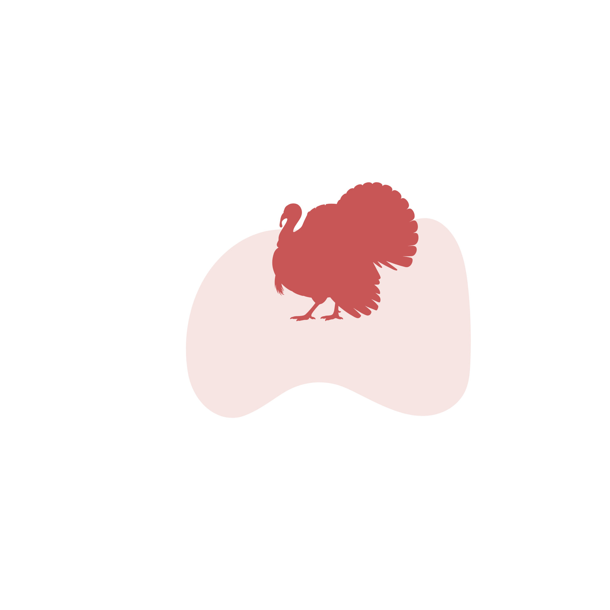

Frequently Asked Questions
Does LivestockBook work offline?
Yes. LivestockBook is designed to work offline, and most features can be used without an internet connection. A connection is only needed for things like subscriptions and support links.
Which livestock species are supported?
LivestockBook supports cattle, sheep, pigs, goats, chickens, ducks, turkeys, geese, donkeys, horses, buffalo, rabbits, alpacas, llamas, camels and ostriches.
What can I export?
You can export your animal register and records as PDF or spreadsheet files, filtered by the animals, record types and date range you choose.
Can I use LivestockBook for multiple farms/paddocks?
Yes. You can set up multiple farms, paddocks and groups, and organise your animals and records across them.
What's included in the free plan?
All features are included in the free plan, with a limit of 100 records and 20 animals.
Is LivestockBook available on iPhone and Android?
Yes. LivestockBook is available for iPhone on the App Store and for Android on Google Play.
Are there accounts so I can use LivestockBook on multiple devices?
Not yet. Your data is stored locally on your device, so it does not sync between devices. Accounts with syncing across devices are a feature we are actively working on.
Do you offer accounts for organisations?
Not yet. A web portal for organisations is also in the works.
How much does it cost?
LivestockBook is free to download and use. LivestockBook Pro removes the free plan limits and is offered as a subscription.
Can I cancel Pro at any time?
Yes. LivestockBook Pro is billed through your App Store or Google Play account, so you cancel it the same way as any other subscription, from the subscription settings on your device. You keep Pro until the end of the period you have already paid for, and your animals and records stay on your device either way.
Where is my livestock data stored?
On your device. Your animals, records and farm setup are saved locally, so everything stays available offline and LivestockBook does not upload your records to a server. Because the data lives on the device, it is worth taking a backup from time to time.
How do backup and restore work?
Backup saves everything to a single file named like LivestockBook-Backup-2026-08-21.json, covering your animals, records, farms, paddocks, groups, medicines and your profile settings. You then choose where to keep it through the usual share sheet, such as Files, iCloud Drive, Google Drive or email. To restore, pick that file from the Restore option and LivestockBook replaces the data currently on the device with the contents of the backup.
What happens if I change or lose my phone?
Your records are stored on the device, so take a backup before switching phones and keep the file somewhere off the device, such as cloud storage or your email. On the new phone, install LivestockBook and restore that backup file to bring your animals, records and setup across. If you subscribe to Pro, use Restore Purchases on the new device rather than the backup file, as the subscription belongs to your App Store or Google Play account.
Can LivestockBook help me with audits or inspections?
It can help you prepare. You can filter your records by animal, record type and date range, then export the result as an organised PDF or spreadsheet carrying your farm details, ready to print or hand over. Record-keeping requirements differ from country to country, so please check what your own local rules ask for. If something they require is missing from the app, let me know and I will look at adding it.
Can I import existing livestock records?
Not at the moment. The only way to bring data in is to restore a LivestockBook backup file, so records kept in a spreadsheet or another app need to be entered manually for now. Importing from a spreadsheet is something I am considering, so if it would help you, say so in the Facebook group or by email.
Have a question that isn't answered here? Email contact@livestockbook.app.